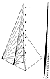

Fig. 986.726
|
986.726
 Fourth, I recall that the tetrahedron's 24 A Modules
and the latter's B, C, D;
A`, B`, C', D'; A", B", C", D"...(alpha) (see Fig.
986.726,
which is a detail and relabeling of
Fig.
923.10B)
together with the T and E Modules provide
transformative significance of
being the constant-unit-volume progression of ever-more-asymmetrically-transforming
stages of the constant-unit-volume tetrahedra, with
the uniform-stage transforming being
provided by five of the six edges of each of the constant-volume
tetrahedra being
covaryingly and ever-progressively-disparately altered__with
the sixth edge alone of each
and all stages of the transformation remaining unaltered
in frequency and wavelength
magnitude. The concurrent
Fourth, I recall that the tetrahedron's 24 A Modules
and the latter's B, C, D;
A`, B`, C', D'; A", B", C", D"...(alpha) (see Fig.
986.726,
which is a detail and relabeling of
Fig.
923.10B)
together with the T and E Modules provide
transformative significance of
being the constant-unit-volume progression of ever-more-asymmetrically-transforming
stages of the constant-unit-volume tetrahedra, with
the uniform-stage transforming being
provided by five of the six edges of each of the constant-volume
tetrahedra being
covaryingly and ever-progressively-disparately altered__with
the sixth edge alone of each
and all stages of the transformation remaining unaltered
in frequency and wavelength
magnitude. The concurrent
| __ | constant-volume-and-wavelength transformings, and
| | __ | system rotating around and angular tilting of the
constant, unaltered-in-length,
sixth edge's axial altitude in respect to the all-other-in-Universe
experiences'
omniinterangular orientations,
|
altogether both permit and accommodate any two other
points X and Y in Universe being
interconnected not only with one another, but also with
the two points A and B that define
the unaltered sixth edge AB of the constant-volume and
constant-AB-edge-length, omni-
Universe-interconnecting tetrahedron ABXY; all of which
permits the constant sixth edge
AB length to serve as the anywhere and anywhen in Universe
to be established
transceiver's wavelength-defining and frequency-selecting
and tuning interconnecting any
given two points in Universe with any two other points
in Universe; ergo, with all other
points in Universe, granted only sufficient elapsed
time for rotational realization of the
frequency of repetition of the wavelength vector's velocity
factor to reach any given loci
in Universe with a given volumetric-unit quantum of
energy. (This is the significance of
Fig.
923.10.)
|